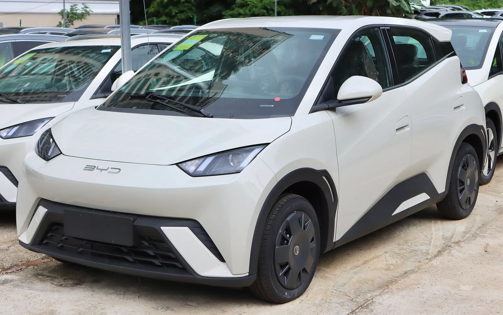
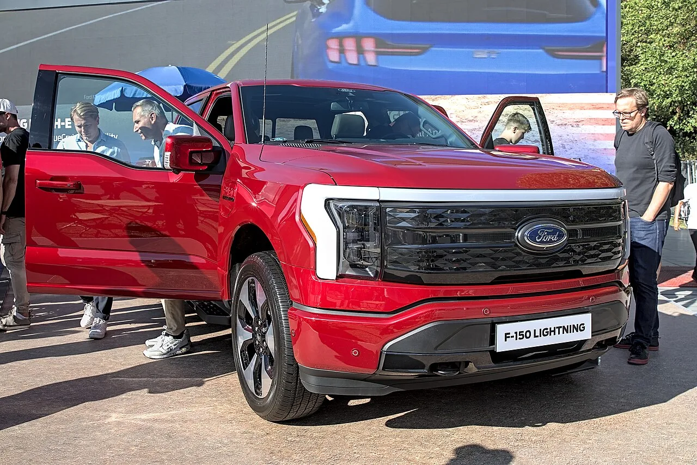
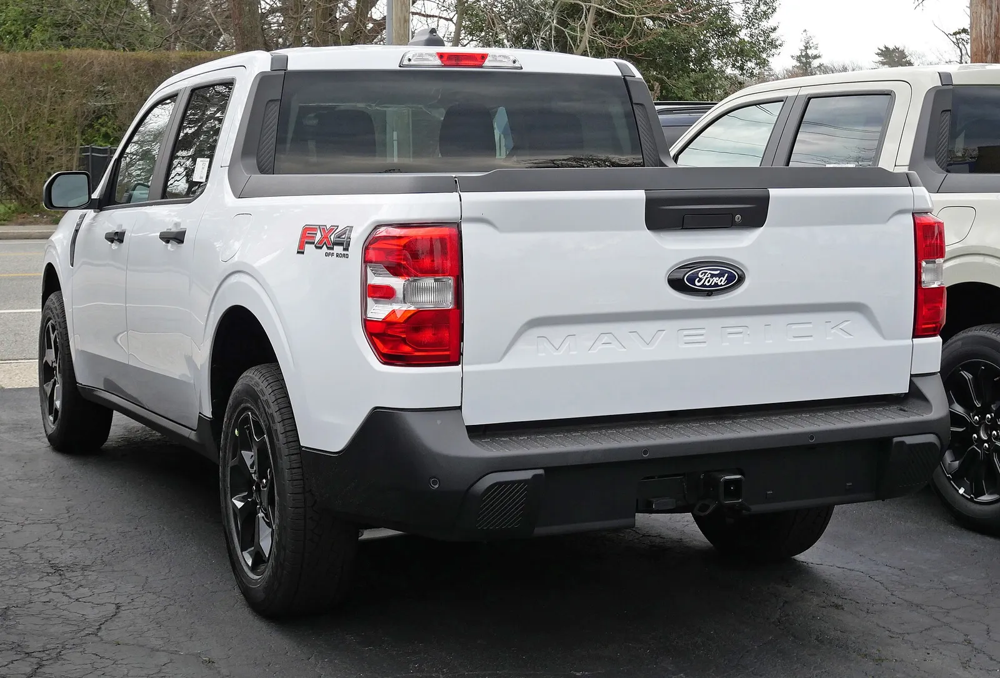
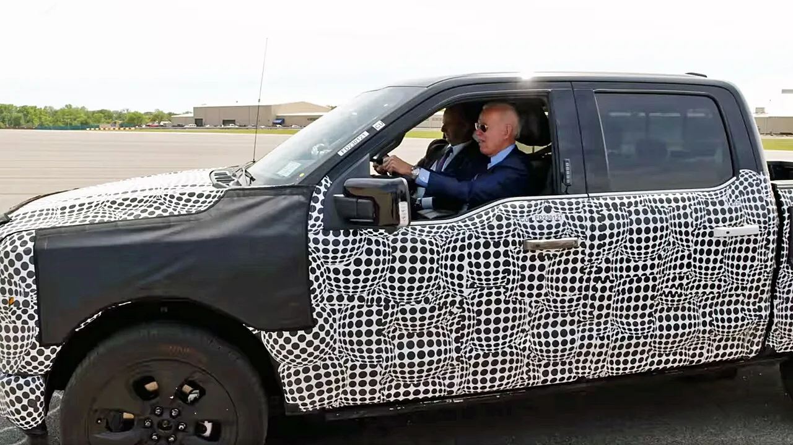
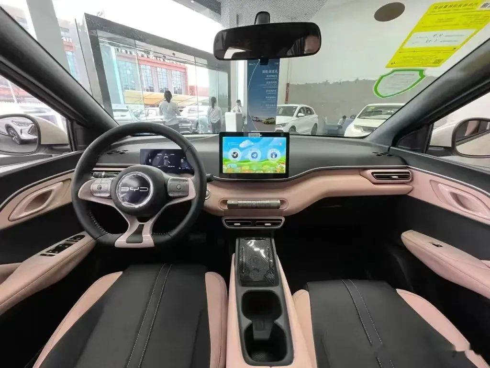
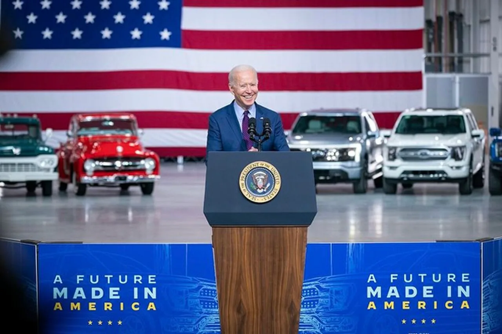

▲ 페덤이 생산될 켄터키주 루이빌 조립공장(야간) ⓒ Smokeyrunbandit / Wikimedia Commons (CC BY-SA 3.0)
"우리는 아직 UEV 양산에 비행기를 착륙시키지 못했습니다." 포드 CEO 짐 팔리가 이번 주 열린 오토모티브 뉴스 콩그레스에서 한 말이다. 3만 달러 안팎 전기 픽업 페덤(Fathom)을 2027년에 내놓겠다던 포드의 CEO가, 같은 자리에서 "규모와 원가, 일정을 모두 맞춰 출시하려면 엄청난 노력이 필요하다"고 덧붙였다.
이 발언을 Electrek은 10월 1일 "양산 출시가 불확실해졌다"는 제목으로, CarBuzz는 "CEO가 우려를 드러냈다"는 제목으로 전했다. 다만 포드는 같은 날 "2027년 출시에는 변화가 없다"고 못박았다. 발언은 실제로 무엇을 말한 것이고, 포드 공식 입장과는 얼마나 어긋날까.
1. 팔리는 정확히 무슨 말을 했나
발언은 2026 오토모티브 뉴스 콩그레스에서 나왔다. Electrek은 두 문장을 모두 이 행사에서의 발언으로 전했고, CarBuzz는 두 인용문의 출처로 행사명과 매체명(Automotive News Congress, Automotive News)을 혼용해 적었고 문장별 귀속은 CarBuzz 원문 확인이 필요하다. 두 매체 모두 원출처는 오토모티브 뉴스로 보이며, 이 글은 그 원문 전체를 직접 확인하지는 못했다는 점을 먼저 밝힌다.
| 발언(영어 원문) | 의미 | 귀속 |
|---|---|---|
| "We haven't landed the plane on mass production of UEV yet." | UEV(유니버설 EV 플랫폼) 양산 안착은 아직 | Electrek, CarBuzz 모두 인용 |
| "It's going to be a heck of an effort to launch this at scale, at cost, on time." | 규모·원가·일정을 모두 맞추는 출시는 큰 노력 필요 | Electrek, CarBuzz 모두 인용 |
| BYD 전기차가 페덤 배터리 대비 약 20% 원가 우위를 가질 것으로 봤다 | 이를 따라잡으려 모터·변속기·인버터를 손봐 더 작은 배터리 채택 | Electrek, CarBuzz 모두 전달 |
핵심은 발언의 성격이다. 팔리는 "출시를 미루겠다"고 말하지 않았다. 아직 양산 체제가 완성되지 않았고 규모·원가·일정 세 조건을 동시에 맞추는 것이 어렵다는, 일종의 경계 발언이다. 출시가 늦어질 수 있다는 해석은 CarBuzz가 "강하게 시사했다(hinted)"고 쓴 매체의 해석이지 팔리의 직접 언급은 아니다.
📍 "비행기를 착륙시키다"의 뜻
항공 비유로, 개발·시험 단계를 지나 대량 생산 체제에 실제로 안착시키는 단계가 아직 남았다는 뜻으로 읽힌다(해석). 양산 개시 일정이 바뀌었다는 발표는 아니다.
원문 보도는 아래에서 확인할 수 있다. Electrek 기사 바로가기 CarBuzz 기사 바로가기
2. 앞서 "순조롭다"던 때와 무엇이 다른가
Electrek은 "포드가 지난달 2027년 양산 착수가 순조롭다고 했는데 그 일정이 불확실해졌다"고 썼다. 확인되는 포드 공식 자료는 8월 13일자 포드 미디어 글로, '한 달 전'보다는 조금 더 앞선다. 내용을 나란히 놓으면 공식 일정과 이번 발언 사이에 직접 충돌하는 부분은 보이지 않는다.
| 구분 | 8월 13일 포드 공식 | 10월 1일 팔리 발언·포드 대변인 |
|---|---|---|
| 톤 | "순조롭다(on track)" | "엄청난 노력이 필요", 단 대변인은 "변화 없다" |
| 프로토타입 | 2027년 1분기, 양산 부품으로 제작 착수 | 언급 없음 |
| 고객 차량 | 같은 해 후반 | 대변인 "2027년 출시" |
| 공장 투자 | 루이빌 20억 달러 재설비 | 루이빌+미시간 배터리 공장 합계 50억 달러(Electrek) |
눈여겨볼 대목이 하나 있다. Electrek은 본문에서 페덤이 "2027년 초 판매 시작"될 것으로 적었는데, 포드 8월 자료는 프로토타입이 1분기, 고객 차량은 같은 해 후반이라고 했다. 두 서술이 같은 일정을 가리키는지, Electrek이 '판매 개시'를 느슨하게 쓴 것인지는 이번 취재로 확인하지 못했다. 8월 기사에서 정리한 대로 사전예약은 2027년 초, 인도는 하반기라는 흐름이 포드 쪽 기준에 가깝다.
3. 팔리가 걱정한 지점 — 규모, 원가, 일정
팔리가 언급한 세 조건은 따로 읽을 필요가 있다.
- 원가: 포드는 BYD 전기차의 배터리 원가가 페덤보다 약 20% 유리하다고 판단했고, 모터·변속기·인버터 설계를 바꿔 같은 주행거리를 더 작은 배터리로 내는 쪽으로 대응했다고 한다(CarBuzz).
- 규모: 월스트리트저널 보도를 Electrek이 재인용한 바로는 포드는 첫해 10만 대 판매를 노린다. 단일 출처이고 포드가 직접 확인한 수치는 아니다.
- 일정: 프로토타입 단계와 대량 양산 사이의 간극이 핵심이다. 양산이 안정되지 않으면 첫해 판매 목표를 맞추기 어려울 수 있다는 것이 Electrek의 해석이다.

▲ 포드가 원가 비교 대상으로 삼았다는 BYD 전기차의 예시로 실은 BYD 시걸(페덤 비교 모델이 시걸이라는 보도는 확인되지 않았다) ⓒ User3204 / Wikimedia Commons (CC BY-SA 4.0)
📍 가격은 흔들리지 않았다
시작가는 표준 배터리 모델 2만 8,350달러로 Electrek이 재확인했다. 운송비 1,595달러를 더한 2만 9,945달러는 8월 기사에서 다뤘다. 환율을 1달러 1,370원으로 가정하면 기본가는 약 3,900만 원 안팎이다(가정치).
양산 난이도와 별개로, 팔리는 같은 자리에서 품질 이야기도 꺼냈다. CarBuzz에 따르면 그는 "포드가 품질과 사랑에 빠졌다 헤어지기를 네 번 봤다"고 말했고, 토요타에서 포드로 옮긴 지 19년이 됐으며 지금의 품질 의지가 그 이후 가장 강하다는 취지로 전해진다. 이 발언이 페덤 일정과 직접 이어진다고 단정할 근거는 없다. 다만 '규모·원가·일정'에 품질까지 얹히면 저가 전기 픽업의 양산 안정화가 왜 부담인지를 가늠할 단서는 된다(해석).
| 항목 | 내용 | 비고 |
|---|---|---|
| 투자 규모 | 루이빌 조립공장과 미시간 블루오벌 배터리 파크 합계 50억 달러 | Electrek |
| 루이빌 공장 | 연면적 약 300만 평방피트(약 28만㎡) | Electrek, 환산치는 본지 계산 |
| 첫해 판매 목표 | 10만 대 | 월스트리트저널 인용, 포드 미확인 |
| 주요 기능 | NACS 충전 포트, 양방향 충전, 디지털 키, 블루크루즈, 애플 지도 연동 | Electrek |
눈에 띄는 것은 NACS 충전 포트다. 한국은 현재 CCS1 계열이 널리 쓰이고 있어, 이 사양은 페덤이 국내에 들어온다면 충전 호환 문제를 따로 풀어야 한다는 뜻이 된다(한국 출시 계획이 없으므로 가정적 이야기다).

▲ 현행 포드 컴팩트 픽업 매버릭(페덤 아님). 포드가 저가 픽업 시장에서 쌓아온 이력을 보여주는 차다 ⓒ HJUdall / Wikimedia Commons (CC0)
4. 변수는 따로 있다 — 슬레이트와 포드의 EV 전략 변화
CarBuzz는 두 가지를 덧붙였다. 첫째, 2만 5,000달러 미만 전기 픽업을 내놓는 슬레이트(Slate)가 포드보다 먼저 출시될 가능성이 있다는 것이다. 다만 수동 창문과 무도장 플라스틱 차체 같은 극단적 기본 사양이라 소비자 겹침은 제한적일 수 있다고 봤다(CarBuzz 해석).
둘째, 포드가 지난해 EV 전략을 축소하며 195억 달러 규모의 타격을 입었다는 점이다. 이 숫자는 CarBuzz 기준이며, 포드가 EV 사업 구조를 갈아엎은 흐름의 일부다.
| 시점 | 내용 | 근거 |
|---|---|---|
| 2025년 12월 | 순수 전기 F-150 라이트닝 단종, 후속은 주행거리연장형(EREV) 라이트닝으로 전환(700마일 이상 주행거리 제시) | Ford Authority, Wards Auto, Electrek 보도 |
| 2026년 8월 | 페덤 공개, 2만 8,350달러부터, 루이빌 20억 달러 재설비 | 포드 미디어, Electrek |
| 2026년 10월 1일 | 팔리 "양산 안착 아직", 대변인 "2027년 출시 변화 없다" | Electrek, CarBuzz |

▲ 순수 전기 F-150 라이트닝(2023 IAA). 포드는 이 풀사이즈 EV를 EREV로 대체한다고 밝혔다 ⓒ Alexander-93 / Wikimedia Commons (CC BY-SA 4.0)
고가 EV를 접고 페덤 같은 저가형 EV에 집중하는 것은 같은 전략의 양면이다. 팔리가 4월 인터뷰에서 BYD를 진짜 경쟁자로 꼽은 맥락은 포드 CEO 팔리 "진짜 경쟁자는 BYD" 기사에서 정리했다.
5. 공장은 어디까지 준비됐나
루이빌 재설비는 8월 포드 발표 기준 20억 달러 규모로, 어셈블리 트리 공법 등 생산 방식의 변화가 핵심이다. 세부 내용은 루이빌 재설비 기사에 있으므로 여기서는 반복하지 않는다. 이번 발언이 건드린 부분은 공장 하드웨어가 아니라 공급망·원가·수율까지 포함한 대량 양산 안정화다. 공장 전환이 끝났다는 것과 대량 생산을 흔들림 없이 이어가는 것은 다른 문제다(해석).

▲ 페덤이 아닌 현행 매버릭 FX4 후면. 페덤이 노리는 저가 소형 픽업 영역에 이미 나와 있는 포드 제품이다(해석) ⓒ Kevauto / Wikimedia Commons (CC BY-SA 4.0)

▲ 위장막을 씌운 F-150 라이트닝 프로토타입 시승(2021, 미시간 로즈 EV센터). 페덤이 아니다 ⓒ The White House / Wikimedia Commons (퍼블릭 도메인)
6. 한국 독자에게 의미는
페덤의 한국 출시 계획은 확인되지 않았다. 포드 발표는 미국 시장 중심이고, 국내 언론 보도에서도 한국 일정은 찾지 못했다. 따라서 이번 소식의 의미는 구매 정보가 아니라 비교 지표에 가깝다. 포드 같은 대형 업체가 '원가 20% 격차'를 의식해 3만 달러 안팎 EV를 새로 설계하고도 양산 안착을 낙관하지 못한다는 점은, 저가 전기차 경쟁이 그만큼 어렵다는 사례다. 한국 시장 저가 전기차 이슈는 아이오닉 V 국내 출시 기사에서 볼 수 있다.

▲ BYD 시걸 실내. 저가 전기차가 어떤 구성으로 원가를 맞추는지 보여주는 참고용 사진이다(페덤 실내가 아니다) ⓒ GZrex / Wikimedia Commons (CC BY-SA 4.0)

▲ 2021년 로즈 EV센터 행사 장면. 포드의 전기 픽업 전략은 이후 크게 바뀌었다 ⓒ The White House / Wikimedia Commons (퍼블릭 도메인)
7. 정리 — 확인된 것과 아직 모르는 것
10월 1일 보도의 새 사실은 팔리의 "UEV 양산에 아직 착륙하지 못했다", "규모·원가·일정을 맞춰 출시하는 건 엄청난 노력"이라는 발언이다. 같은 날 포드 대변인은 "2027년 출시에 변화 없다"고 밝혀, 공식 일정은 바뀌지 않았다. 즉 이번 일은 일정 연기 발표가 아니라 CEO가 양산 난이도를 공개적으로 인정한 사건이다.
확인하지 못한 것은 오토모티브 뉴스 원문 전체, 발언의 정확한 날짜와 순서, Electrek이 쓴 '2027년 초 판매'가 포드 일정과 일치하는지 여부다. 첫해 10만 대 목표는 월스트리트저널 인용 보도이고, 한국 출시 계획은 확인되지 않았다.